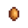
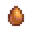
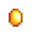
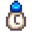
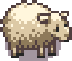

Animaux
Les Animaux remplissent plusieurs rôles dans votre ferme. Certains sont sauvages et avec ceux-ci vous ne pouvez pas interagir. Vous pouvez avoir un animal de compagnie, chien ou chat, avec qui vous pouvez développer une amitié. Vous pouvez aussi avoir un cheval que vous pouvez monter. Et bien évidemment, vous pouvez acheter des "animaux de la ferme" qui vous permettront d'obtenir divers productions, des fournitures de ressources ainsi que des bénéfices.
La plupart des Animaux nécessitent un bâtiment pour les loger (pas les animaux de compagnie ou ceux sauvages). Ces constructions peuvent être obtenues auprès de Robine à sa Scierie et requiert en général 3 jours de construction pour chaque bâtiment.
Les bébés animaux de la ferme (ainsi que l'équipement indispensable pour la récolte du produit) peuvent être achetés auprès de Marnie à son Ranch. Les Animaux peuvent être aussi obtenus via un Incubateur. Dès qu'un animal est acquis, il doit être assigné à une construction de ferme déjà existante - comme une Grange ou un Poulailler - qui sera désignée comme sa maison. Chaque bâtiment a un nombre limite d'Animaux pouvant habiter dedans.
Si à n'importe quel moment vous souhaitez assigner un animal à un bâtiment différent, vous pouvez le caresser, et la fenêtre d'information qui apparaît dispose d'un contrôle qui vous permet de procéder à la réaffectation.
Les bébés animaux de la ferme doivent d'abord devenir adulte avant d'être capable de produire des produits d'origine animale. Chaque matin, les Animaux adultes qui vivent dans les poulaillers (poules, canards, lapins et dinosaures) ont une chance de produire des produits qui peuvent être collectés à même le sol de leurs maisons.
En utilisant le Seau de lait, les vaches peuvent en général donner du lait quotidiennement, et les chèvres peuvent en général donner du lait une fois tous les deux jours. Les moutons peuvent être tondus avec les Cisailles lorsque leur laine a assez poussé, et les cochons peuvent être mis dehors afin de déterrer des Truffes que vous pouvez prendre à même le sol.
Animaux de compagnie
Nouvelle Ferme
Le joueur peut adopter un chat ou un chien. L'animal que vous pouvez adopter dépend de votre choix d'animal préféré lors de la création de votre personnage. Vous pouvez choisir entre différents styles de chat et chien.
Marnie vous attendra devant votre porte avec un chat ou un chien le premier Mercredi ou Vendredi matin ensoleillé au Printemps après avoir gagné  1 000po. Vous devez quittez votre maison entre 6:00 et 9:30 pour déclencher cet événement. Si vous n'avez pas gagné assez d'argent le 20ème jour, l'événement se déclenchera quand même. Adopter l'animal est optionnel (Marnie vous demandera si vous voulez le garder). Vous pouvez lui donner le nom de votre choix lorsque vous l'adoptez, mais vous ne pourrez pas le changer par la suite. Si vous n'avez pas encore rencontré Marnie quand elle vous apporte l'animal, la rencontre comptera comme une introduction.
1 000po. Vous devez quittez votre maison entre 6:00 et 9:30 pour déclencher cet événement. Si vous n'avez pas gagné assez d'argent le 20ème jour, l'événement se déclenchera quand même. Adopter l'animal est optionnel (Marnie vous demandera si vous voulez le garder). Vous pouvez lui donner le nom de votre choix lorsque vous l'adoptez, mais vous ne pourrez pas le changer par la suite. Si vous n'avez pas encore rencontré Marnie quand elle vous apporte l'animal, la rencontre comptera comme une introduction.
Animaux de compagnie supplémentaires
Après avoir atteint le niveau d'amitié maximale avec votre premier animal de compagnie, ou avoir atteint l'année 2 sans en avoir, les joueurs peuvent acheter une Licence pour animaux de compagnie au Ranch de Marnie pour en adopter davantage.[1] Les chats et les chiens coûtent chacun  40 000po. Il y a également deux variétés de tortues, l'une pour
40 000po. Il y a également deux variétés de tortues, l'une pour  60 000po et l'autre pour
60 000po et l'autre pour  500 000po. Le joueur doit construire une Gamelle supplémentaire via la Scierie pour chaque nouvel animal de compagnie, afin d'éviter de perdre de l'amitié avec cet animal. Tout animal de compagnie dont le joueur ne veut plus peut être supprimé de la ferme en utilisant de la Poudre de papillon sur eux.
500 000po. Le joueur doit construire une Gamelle supplémentaire via la Scierie pour chaque nouvel animal de compagnie, afin d'éviter de perdre de l'amitié avec cet animal. Tout animal de compagnie dont le joueur ne veut plus peut être supprimé de la ferme en utilisant de la Poudre de papillon sur eux.
Chat ou Chien
Les chapeaux peuvent être placés sur les chats et les chiens.

Gamelle vide

Gamelle remplie

De Dev Blog #29

De Dev Blog #29
Tortue
Les chapeaux ne peuvent pas être placés sur les tortues.
Amitié
Vous pouvez interagir avec votre animal une fois par jour, et il vous montrera son amitié . Votre animal a une amitié maximale de 1000, augmentant de 12 chaque jour où vous interagissez avec. Tous les 200 points correspondent à 1 niveau, et avoir 800 vous fait gagner 1 point pour l'évaluation de Grand-père.
En atteignant 1000 points d'amitié avec votre animal, le message suivant apparaîtra: " <Nom de l'animal> vous adore ♡" Vous pouvez vérifier votre niveau d'amitié avec l'animal dans le menu Animaux quand le jeu est en pause.
Il y a une gamelle sur des planches de bois à proximité de votre maison que vous pouvez remplir d'eau pour votre animal. Il se situe en haut à gauche de la maison sur les fermes standard, forestière, des collines, en région sauvage, et de rivière. Elle se situe à l'intersection des différentes sections dans la ferme en quatre parcelles, au dessus du rivage dans la ferme de plage, et en bas à droite dans la ferme des champs de prés. Si vous lui donnez à boire, le matin suivant l'amitié de votre animal augmentera de 6 points. Notez que ceci ne se déclenchera pas s'il pleut le matin suivant. Les jours de pluie, la gamelle de votre animal sera remplie automatiquement. S'il pleut avant que vous adoptiez l'animal, la gamelle restera rempli jusqu'à l'adoption.
A l'inverse des PNJ humains, ignorer un animal de compagnie ou utiliser le lance-pierre sur lui ne fera pas baisser l'amitié. Chaque nuit passée pour un animal de compagnie sans avoir sa propre gamelle lui fera perdre 10 points d'amitié le lendemain matin.[2]
Cadeaux d'animaux
Une fois le niveau d'amitié maximal atteint, un animal de compagnie peut lâcher des objets au sol comme cadeau lorsque le joueur le caresse pour la première fois de la journée. Il y a 20% de chance pour qu'un animal lâche un cadeau chaque jour.[3] Comme les cadeaux des villageois envoyés par courrier, le cadeau de l'animal de compagnie est aléatoire à chaque fois que la journée est rechargée. Le tableau ci-dessous liste les chances d'apparition d'un cadeau, lorsqu'un animal en lâche un.
| Cadeaux d'animaux de compagnie | ||||||||||||||||||||||||||||||||||||||||||||||||||||||||||||||||||||||||||||||||||||||||||||||||||||||||||||||||||||||||||||||||||||||||||||||||||||||||||||
|---|---|---|---|---|---|---|---|---|---|---|---|---|---|---|---|---|---|---|---|---|---|---|---|---|---|---|---|---|---|---|---|---|---|---|---|---|---|---|---|---|---|---|---|---|---|---|---|---|---|---|---|---|---|---|---|---|---|---|---|---|---|---|---|---|---|---|---|---|---|---|---|---|---|---|---|---|---|---|---|---|---|---|---|---|---|---|---|---|---|---|---|---|---|---|---|---|---|---|---|---|---|---|---|---|---|---|---|---|---|---|---|---|---|---|---|---|---|---|---|---|---|---|---|---|---|---|---|---|---|---|---|---|---|---|---|---|---|---|---|---|---|---|---|---|---|---|---|---|---|---|---|---|---|---|---|---|
| ||||||||||||||||||||||||||||||||||||||||||||||||||||||||||||||||||||||||||||||||||||||||||||||||||||||||||||||||||||||||||||||||||||||||||||||||||||||||||||
Cheval

Le cheval est une monture qui donne un bonus de vitesse de +30%. Il s'obtient en achetant l'Étable dans la Scierie. Comme les autres animaux de compagnie, le cheval peut être nommé quand il est obtenu, mais le champ apparaît seulement la première fois qu'il est chevauché.
Si vous laissez votre cheval quelque part, il vous y attendra, et à votre retour le message suivant apparaît : "<Nom du cheval> se demande où vous étiez." ou "Votre loyal destrier a patiemment attendu votre retour." Si vous allez dormir en laissant votre cheval en dehors de La ferme, votre cheval rentrera automatiquement à la maison et sera dans l'étable le matin suivant.
Le cheval peut passer partout en marchant à l'horizontale, mais à besoin de 2 cases d'espace à la verticale (Sauf sur les ponts où le cheval passe quand même), donc en se promenant à cheval, vous ne pourrez pas passer dans tous les chemins comme si vous étiez à pied. Le cheval ne ralentit pas quand il marche sur les cultures de la ferme.
Les Chapeaux peuvent être posés sur les chevaux. Un chapeau peut être retiré en sélectionnant un autre chapeau dans l'inventaire et en cliquant sur le cheval. (Le chapeau sélectionné reste dans l'inventaire.)
Lorsque vous êtes sur votre cheval vous pouvez interagir avec les éléments ci-contre :
- Le portail peut être fermé et ouvert.
- Les portes des animaux du poulailler et de la grange peuvent être ouvertes ou fermées.
- Vous pouvez placer vos objets dans le bac d'expédition.
- Concernant l'étang à poissons : Vous pouvez collecter des objets, ajouter des poissons, ajouter des objets de quête, changer d'apparence et vider l'étang.
- Vous pouvez parler aux villageois.
La flute de cheval peut être utilisée pour téleporter le cheval à côté du joueur. Cela ne fonctionne uniquement dehors (incluant l'île gingembre et le désert de Calico).
Les soins aux Animaux
Amitié

Les animaux qui vivent dans les granges et les poulaillers ont une barre d'amitié visible en cliquant sur l'animal après l'avoir soigné (en sélectionnant de la paille dans l'inventaire, vous ne pouvez pas ouvrir cette fenêtre ce qui peut être utile si vous l'ouvrez souvent par accident). Le maximum est de 5 cœurs d’amitié, augmente par demi-cœurs, et rentre en compte lorsque le jeu décide de la qualité des produits de l'animal, si celui-ci peut en produire.
Chaque demi-cœur équivaut à 100 points d'amitié, ce qui fait un maximum d’amitié de 1000 points.
Actions qui affectent l'amitié :
- Prendre soin (+15, ou +30 si le joueur à la compétence Éleveur de bétail ou Maître du poulailler et que l'animal est du type correspondant)
- Traire ou tondre(+5, pas de malus si pas de traite ou de tonte)
- Manger de l'herbe à l’extérieur (+8)
- Non nourri (-20 Calculé à la fin de la journée)
- Coincé dehors la nuit (-20 Calculé à la fin de la journée)
- Pas de soin (ne pas parler avec l'animal) (-5 à -10, Calculé à la fin de la journée avec la formule : (10 - (Amitié actuelle / 200))) Les animaux perdront donc moins d’amitié s'ils ont déjà beaucoup d'amitié.
Humeur
Comme l'amitié, l'humeur d'un animal se vérifie en cliquant dessus après en avoir pris soin.
L'humeur est un facteur important pour déterminer la qualité et type de produit qu'il produira. Ceci est seulement pris en compte quand le jeu choisit le produit de l'animal au début de la journée, et n'a pas d'autres effets.
L'humeur est une valeur de 0 à 255. Vous pouvez estimer cette valeur via le message qui apparaît en cliquant dessus :
- <Nom de l'animal> a l'air très heureux aujourd'hui ! indique que l'humeur est de minimum 200 et maximum 255.
- <Nom de l'animal> a l'air d'aller bien. indique que l'humeur est de minimum 30 et maximum 200.
- <Nom de l'animal> a l'air triste. indique que l'humeur est de minimum 0 et maximum 30.
Actions qui affectent l'humeur ("toutes les 10 minutes" correspond à des minutes dans le jeu):
- Prendre soin(+32 à +36 selon le type d'animal, double le total si le joueur a choisi la profession Éleveur de bétail ou Maître du poulailler et que l'animal est du type correspondant)
- Manger de l'herbe à l'extérieur (Met l'humeur à 255)
- C'est l'Hiver et l'animal est dans un bâtiment avec un Radiateur, et a une humeur à 150 ou plus (+4 à +8 toutes les 10 minutes après 18:00, tant que le joueur reste éveillé, jusqu'à 255. Un seul radiateur est requis. Outrepasse les autres effets "toutes les 10 minutes")
- L'animal est nourri (+4 à +16, selon le type d'animal, calculé lorsque le joueur dort, vérifie si l'animal a mangé de la paille ou de l'herbe)
- L'animal est dehors après 18:00, mais avant 19:00, et a au moins 150 d'humeur (+4 à +8 toutes les 10 minutes ne s'ajoute pas aux autre effets "toutes les 10 minutes")
- L'animal est dehors quand il pleut ou en Hiver (-4 à -8 toutes les 10 minutes ne s'ajoute pas aux autre effets "toutes les 10 minutes")
- L'animal est dehors après 19:00 (-4 à -8 toutes les 10 minutes ne s'ajoute pas aux autre effets "toutes les 10 minutes")
- L'animal a dormi dehors (-moitié de l'humeur actuelle, calculé quand le joueur dort)
- Pas de soin (-20 à -40, selon le type d'animal, calculé quand le joueur dort)
- L'animal n'a pas été nourri (-100 calculé quand le joueur dort)
Production
Les nouveaux animaux doivent devenir adultes avant de pouvoir produire quelque chose. Chaque espèce a son propre nombre de jours requis entre chaque production. Par exemple, les vaches et les poules peuvent produire du lait et des œufs tous les jours, et les chèvres produisent du lait tous les 2 jours. Les animaux qui peuvent produire des produits Large ou Deluxe peuvent parfois produire plus fréquemment (voir "Cas spécial" plus bas.)
Si suffisamment de jours ont passé pour sa production, quelques vérifications additionnelles détermineront si l'animal peut effectivement produire.
- Si l'animal n'a pas été nourri, il ne produira pas.
- Si l'animal a moins de 70 points d'humeur, il y a une chance qu'il ne produise pas. Plus basse est l'humeur, moins il a de chances de produire. (le pourcentage de chance qu'il produise quand même est de Humeur/70)
Que l'animal produise un produit Deluxe ou Large, et la qualité du produit, est déterminé au début de la journée, aléatoirement en fonction de l'humeur et l'amitié.
- Si l'animal a 150 d'humeur ou plus, il pourra produire des produits de qualité, ou Deluxe ou Large. (Notez qu'il s'agit seulement de pouvoir les produire, la chance de les produire réellement est expliquée plus bas, des produits de qualité, ou Large ou Deluxe, ne sont pas garantis)
- Si l'animal a moins de 150 d'humeur, il a toujours une chance de produire un produit de qualité, ou Large ou Deluxe. Plus basse est l'humeur, moins il a de chance. (Le pourcentage de chance est de Humeur/150)
Cas spécial: Si l'animal peut produire quelque chose, mais ne peut pas faire de produit de de qualité, ou Large ou Deluxe, le jeu n'enregistrera pas qu'il a produit quelque chose ce jour-ci. Dans ce cas, les animaux qui produisent normalement en plusieurs jours, produiront à nouveau immédiatement le lendemain.
Produits de grande taille et de luxe
Un "Modificateur d'humeur" est calculé lorsque le jeu choisit de créer ou non un produit Deluxe (Grande taille, Plume de canard, et Patte de lapin) de la manière suivante :
- Si l'humeur est supérieure à 200, le "Modificateur d'humeur" sera multiplié par 1.5.
- Si l'humeur est entre 100 et 200, le "Modificateur d'humeur" est à zéro.
- Si l'humeur est à 100 ou moins, le "Modificateur d'humeur" sera l'humeur de l'animal moins 100 (Le résultat sera toujours à zéro ou négatif)
Ce "Modificateur d'humeur" sera utilisé de différentes manières selon l'espèce.
Essayez de rester vers une humeur à 200 pour un bonus grande taille
Plumes de Canard et Pattes de Lapin
Les canards et les lapins prendront en compte la Chance quotidienne pour déterminer s'il produiront leur produit Deluxe.
Pour chaque canard ou lapin, un score global est créé avec la formule suivante : (Amitié + Modificateur d'humeur)/5000 + Chance quotidienne
Par exemple, un animal avec 600 Amitié (3 Hearts), 150 Humeur, et 0.10 (Max) Chance quotidienne, donnera :
=(600 + (0))/5000 + 0.10
=(600+0)/5000 + 0.10
=0.22
Chaque fois qu'un produit est généré, un nombre aléatoire entre 0-1 est tiré contre ce score. Si le score global est plus haut que ce nombre aléatoire, un produit Deluxe sera créé. Avec une Amitié max, Humeur max, et Chance max, vous aurez 38% de chance d'avoir un produit Deluxe
Gros Oeufs et Grande quantité de lait
Pour les animaux qui produisent des produits de grande taille, le jeu prendra l'Humeur et l'Amitié en compte.
Seuls les animaux avec 200 d'amitié ou plus peuvent produire des produits de grande taille.
Chaque animal a un score global généré avec la formule suivante : (Amitié + Modificateur d'Humeur)/1200
Par exemple, un animal avec 600 Amitié (3 Cœurs) et 210 Humeur donnera :
=((600 + (210*1.5))/1200
=(600+315)/1200
=0.7625
Chaque fois qu'un produit est généré, un nombre aléatoire entre 0-1 est tiré contre ce score. Si le score global est plus haut que ce nombre aléatoire, un produit de grande taille sera créé. Dans cet exemple, il y a 76% de chance d'obtenir un produit de grande taille. Un score global de minimum 1200 garantit un produit de grande taille.
Qualité
Si l'animal a la capacité de produire un produit de qualité, ce sera aléatoirement de qualité normale à iridium.
Chaque animal aura un score global généré avec la formule suivante : ((Amitié/1000) - (1 - (Humeur/225))
par exemple, un animal avec 600 Amitié (3 Cœurs) et 150 Humeur donnera :
=((600/1000) - (1 - (150/225))
=0.6 - (1 - 0.666...)
=0.6 - 0.333...
=0.266...
Si le joueur a la profession Éleveur de bétail ou Maître du poulailler, et que l'animal est de l'espèce correspondante, 0.33 sera ajouté à ce score global.
Le jeu commence par vérifier quelle qualité créer en regardant d'abord si le score est supérieur à 0.95. Si c'est le cas, le score divisé par 2 sera comparé avec un nombre aléatoire entre 0-1. Si le score divisé par 2 est supérieur à ce nombre aléatoire, le produit sera de qualité iridium.
- Dans l'exemple précédent, un score de 0.266... n'est pas supérieur à 0.95; le produit ne sera pas de qualité iridium.
Si le produit n'est pas iridium, le score divisé par 2 sera comparé avec un nombre aléatoire entre 0-1. Si le score divisé par 2 est supérieur à ce nombre aléatoire, le produit sera de qualité or.
- Dans l'exemple précédent, un score de 0.266... divisé par 2 devient 0.133...; le produit a 13% de chance d'être de qualité or.
Si le produit n'est pas or, lescore sera comparé avec un nombre aléatoire entre 0-1. S'il est supérieur à ce nombre aléatoire, le produit sera de qualité argent.
- Dans l'exemple précédent, si le produit n'est pas de qualité or, il aura 26.6% de chance d'être de qualité argent.
Si le produit n'est pas de qualité argent, il sera de qualité normale.
Logement
Les bâtiments peuvent être achetés à la Scierie, et seront construits après quelques jours (3 en moyenne). Une fois placés, ils peuvent être déplacés depuis la Scierie également.
Les granges, poulaillers et le Clapier pour Slime hébergent des animaux, le Silo stocke le foin, et l'Étable débloque le Cheval.
Si deux, ou plus, granges ou poulaillers ont été construit, les animaux peuvent être déplacés en cliquant sur l'animal et en choisissant l'icone correspondante.
Nourriture
Les animaux qui vivent dans les granges ou les poulaillers doivent manger chaque jour, une "portion" par animal. Ils peuvent soit manger de l'Herbe (s'ils ont accès à l'extérieur) soit de la Paille (s'ils restent à l'intérieur ou ne peuvent pas manger d'herbe). En mangeant de l'herbe fraîche, les animaux des poulaillers consomment 2 touffes d'herbe (1 touffe pour de l'Herbe bleue), et les animaux de grange consomment 4 touffes (2 touffes d'Herbe bleue).[4][5] Ils ne meurent pas s'ils ne sont pas nourris, mais ils se fâchent et arrêtent de produire jusqu'à ce qu'ils soient nourris. Ils n'ont pas besoin d'être nourris les jours de festival (sauf pour les mini festivals : Festival du désert, Derby de la truite, Fête du calamar et Marché nocturne). Le jeu les considère automatiquement comme nourris, même si ni herbe ni foin n'ont été consommés.
Les animaux qui viennent d'éclore, de naître, ou d'être achetés n'ont pas besoin d'être nourris le jour où ils arrivent à la ferme, mais les bébés animaux ont par la suite besoin de manger une "portion" (la même qu'un adulte) chaque jour. S'ils ne sont pas nourris, ils ne grandissent pas ce jour.
Les animaux de la ferme préfère l'herbe fraîche plutôt que la paille, et deviennent "très heureux aujourd'hui !" (la meilleure humeur) lorsqu'ils mangent de l'herbe fraîche. Ils n'iront pas dehors en hiver, ou lorsqu'il pleut, neige, ou vente. Les animaux qui restent à l'intérieur, ou qui ne trouvent pas d'herbe à manger, mangeront de la paille à la place, s'il en reste. Étant donné qu'il est presque impossible de cultiver de la nourriture pour animaux en hiver (toutes les herbes et le blé de la ferme disparaissent le premier jour de l'hiver), il est conseillé de préparer autant que possible de la paille en automne.
Les slimes dans un Clapier pour Slime n'ont pas besoin d'être nourris, mais leurs auges peuvent être remplies chaque jour avec de l'eau grâce à l'arrosoir, ou un arroseur automatique. Ils pourront produire des boules de Slimes le jour suivant.
Les chevaux, chiens et chats n'ont pas besoin d'être nourris, mais les animaux de compagnie seront plus heureux si vous remplissez leur gamelle chaque jour.
Animaux piégés à l'extérieur
Un animal peut être piégé à l'extérieur de la grange ou du poulailler si les portes sont fermées avant la nuit. Les conditions qui piègent un animal à l'extérieur ne sont pas très claires. Un animal peut avoir plus de risques d'être piégé à l'extérieur si le joueur ne quitte pas la ferme après 17:00 (quand les animaux commencent à retourner dans leurs bâtiments) et s'il n'entre pas dans la grange/poulailler après 17:00. (Quitter la ferme et rentrer dans la grange/poulailler après 17:00 permettrait apparemment de faire rentrer les animaux dans leurs bâtiments automatiquement). Cela arriverait plus souvent quand le joueur va dormir avant 17:00.
S'il pleut le lendemain, et que les animaux ont été piégés à l'extérieur, l'animal restera dehors sous la pluie. C'est le seul moyen d'avoir un animal dehors sous la pluie. De même, si l'animal est piégé à l'extérieur la nuit du 28ème jour d'Automne, l'animal restera dehors le 1er jour de l'Hiver.
Un animal laissé à l'extérieur de sa maison sera grognon le lendemain.

Animal grognon

Animal sous la pluie

Animal à l'extérieur pendant l'Hiver
Attaques des animaux sauvages

Si un animal se trouve bloqué à l'extérieur (Voir section précédente) car la porte de l'étable ou du poulailler est fermée, ils peuvent se faire attaquer par un animal sauvage pendant la nuit.
Après que le joueur se soit endormi, tous les événements qui doivent avoir lieu pendant la nuit (comme les cinématiques suivant la réalisation des Paquets) ont lieu. Si aucun événement n'est prévu, il y a 50% de chance que le jeu essaye de lancer une attaque d'animal sauvage. Si la procédure est enclenchée, le jeu passe en revue tous les bâtiments d'élevage pour en trouver un ayant les portes fermés et un animal bloqué dehors.
Pour chaque bâtiment, le jeu génère un nombre aléatoire entre 0 et 1 et le compare à 1/(le nombre total de bâtiments agricoles). Si le nombre aléatoire est supérieur, le bâtiment est ignoré. En d'autres termes, plus le joueur a de bâtiments, moins il est probable qu'un soit attaqué. Par exemple, si le joueur a deux bâtiments agricoles, chaque bâtiment a une probabilité de 50% d'être attaqué, trois bâtiments donneraient 33%, quatre donneraient une probabilité de 25% d'être attaqué, etc.
Une fois qu'un bâtiment a été choisi, l'événement prend le premier animal bloqué à l'extérieur de ce bâtiment comme cible de l'attaque. L'animal sera retiré du jeu et le matin, tous les autres animaux auront un message d'humeur disant "<nom de l'animal> semble stressé(e) et paranoïaque aujourd'hui. Il a dû se passer quelque chose de grave hier soir."
Anniversaires des animaux
Comme avec les attaques d'animaux, s'il n'y a pas d'autres événements durant la nuit, il y aura 50% de chance que le jeu tente un événement de naissance d'animal. Le jeu cherche parmi tous les bâtiments une grange améliorée où il reste de la place. Le jeu réalise alors une nouvelle vérification qui présente 0,55% * (le nombre d'animaux dans la grange) chances de procéder à l'événement. Par exemple, une grange améliorée comprenant trois animaux aurait 1.65% de chance de passer cette vérification. Si le bâtiment échoue à cette verification, le jeu cherchera parmi tous les autres bâtiments jusqu'au dernier.
Si une grange passe toutes les vérifications, un des animaux l'occupant est choisi au hasard. Si l'animal n'est pas un bébé et a sa fertilité activée, cet animal donnera naissance.
Vente des Animaux
Pour vendre un animal de Poulailler ou de Grange, cliquez-droit sur l'animal après avoir interagi avec. Son interface d'amitié/humeur apparaît alors. Placez votre curseur sur l'icone de pièce d'or à droite de l'interface pour voir à quel prix l'animal peut se vendre. Pour procéder à sa vente, cliquez sur l'icone et confirmez l'action.
L'argent obtenu via la vente d'animaux ne compte pas dans le compteur total des bénéfices de la partie (visible dans le menu de pause).
Animaux du Poulailler
Ces Animaux ne peuvent pas être achetés tant qu'un Poulailler n'est pas construit dans votre ferme outre le fait qu'ils puissent avoir de la place dedans. Chaque matin, ils laisseront leurs productions à l'intérieur du poulailler.
Poules
- Article principal : Poule
Les Poules adultes produisent un œuf tous les matins si elles sont bien nourries. Plus la Poule est heureuse, plus elle produit des œufs de grande taille et de meilleure qualité.
| Image | Nom | Coût | Produit | Prix de vente à 5 coeurs |
|---|---|---|---|---|
| Poule | ||||
| Poule |  Oeuf marron - 50g  Gros oeuf marron - 95g |
|||
| Poule | ||||
| Poulet du vide | n/a | |||
| Poulet doré | n/a |  Oeuf en or - 500g |
Pour obtenir une Poule du vide : dans un événement aléatoire lorsque vous dormez, une sorcière volera au dessus d'un de vos poulaillers, laissant un Oeuf du vide le lendemain matin. Alternativement, vous pouvez acheter directement un Oeuf du vide au Chariot de voyage dans la Forêt Sève-Cendreuse pour  195po à
195po à  1 000po, ou à Krobus pour
1 000po, ou à Krobus pour  5 000po dans les Égouts. Après avoir obtenu un Oeuf du vide, placez le dans un Incubateur (nécessite un Grand Poulailler/Poulailler de luxe), ce qui résultera en l'éclosion d'un poussin du vide.
5 000po dans les Égouts. Après avoir obtenu un Oeuf du vide, placez le dans un Incubateur (nécessite un Grand Poulailler/Poulailler de luxe), ce qui résultera en l'éclosion d'un poussin du vide.
La couleur d'une poule que vous achetez chez Marnie est aléatoire (blanche ou marron).
Après avoir assisté à l'événement de 8 cœurs de Shane, chaque poule que vous obtiendrez aura 1 chance sur 4 d'être bleue. Au delà de leur apparence, ces poules bleues sont parfaitement identiques à leurs congénères blanches et marrons.
En incubant un œuf de n'importe quelle couleur, la poule que vous obtiendrez ne sera pas forcément de la couleur de l’œuf.
Pour obtenir un Oeuf en or ou un Poulet doré, 100% de progression doit être atteint. Après cela, vous pouvez obtenir l'Oeuf en or depuis le ranch de Marnie pour  100po, chez Chambre des noix de Monsieur Qi pour
100po, chez Chambre des noix de Monsieur Qi pour  100, ou depuis la la sorcière.
100, ou depuis la la sorcière.
Canards
- Article principal : Canard
Un Canard adulte laissera un œuf chaque matin ou une Plume de canard, plus rarement. Un Canard heureux aura plus tendance à produire une plume au lieu d'un oeuf.
| Image | Nom | Coût | Conditions | Produit | Prix de vente à 5 cœurs |
|---|---|---|---|---|---|
| Canard | Grand Poulailler |
Lapins
- Article principal : Lapin
| Image | Nom | Coût | Conditions | Produit | Prix de vente à 5 cœurs |
|---|---|---|---|---|---|
| Lapin | Poulailler de luxe |
Lorsqu'une Amitié suffisante est atteinte, les Lapins peuvent produire une Patte de lapin automatiquement, tout comme pour la laine.
Dinosaures
- Article principal : Dinosaure
Pour obtenir un Dinosaure, il faut obtenir un Oeuf de dinosaure. Ces œufs sont obtenables de plusieurs manières, comme en déterrant des artefacts. Une fois placé dans un incubateur, un œuf de dinosaure prends environ 12,5 jours à éclore en bébé dinosaure.
Le Dinosaure agit comme les autres animaux du poulailler, mais il ne fait aucun son et produit un œuf de dinosaure tous les 7 jours.
| Image | Nom | Coût | Conditions | Produit | Prix de vente à 5 cœurs |
|---|---|---|---|---|---|
| Dinosaure | n/a | Grand poulailler |
Animaux de la Grange
Ces animaux ne peuvent être achetés que lorsque une Grange est construite dans votre ferme, et occuperont une place dans votre grange. Leurs productions peuvent être récupérées à l'aide d'outils, ou en ce qui concerne le cochon, récupérées par terre.
Les animaux de la Grange peuvent mettre bas aléatoirement si leur option de fertilité est activée dans leur menu de statut. Ce menu est consultable en cliquant-droit sur l'animal après l'avoir entretenu. Une icône à droite du menu peut être activée pour rendre l'animal fertile ou non. Si un animal tombe enceinte, un message apparaît dans la nuit vous informant que l'animal a mis bas. Le jeu vous laissera alors choisir un nom pour votre animal. Pour qu'un animal tombe enceinte, il est nécessaire de posséder une Grande grange ou mieux et d'avoir une place libre dans celle-ci.
Vaches
- Article principal : Vache
| Image | Nom | Coût | Produit | Prix de vente à 5 cœurs |
|---|---|---|---|---|

|
Vache | Lait - 125g Grosse quantité de lait - 190g |
||

|
Vache | Lait - 125g Grosse quantité de lait - 190g |
Autruches
- Article principal : Autruche
| Image | Nom | Moyen d'obtention | Conditions | Produit | Prix de vente à 5 cœurs |
|---|---|---|---|---|---|

|
Autruche | Résoudre la Page de journal #10 ou trouver dans un coffre du Donjon du volcan | Avoir une grange |
Chèvres
- Article principal : Chèvre
| Image | Nom | Coût | Conditions | Produit | Prix de vente à 5 cœurs |
|---|---|---|---|---|---|

|
Chèvre | Grande grange |  Lait de chèvre - 225g Grand lait de chèvre - 345g |
Les chèvres produisent du lait tous les jours.
Moutons
- Article principal : Mouton
| Image | Nom | Coût | Conditions | Produit | Prix de vente à 5 cœurs |
|---|---|---|---|---|---|
|  | Mouton | Grange de luxe |
Les Moutons doivent être tondus lorsque leur laine a poussé. Les Cisailles peuvent être achetées au Ranch de Marnie.
Cela prend normalement 3 jours à un mouton de recouvrer sa laine, s'il est bien nourri et a au minimum 70 points d'humeur.
Si le joueur a plus de 900 points d'amitié avec le mouton et s'il l'a entretenu au moins une fois, cette durée sera réduite.
Si le joueur possède la compétence Berger, cela réduit cette durée d'encore un jour, faisant qu'un mouton pourra recouvrer sa laine tous les jours.
Cochons
- Article principal : Cochon
| Image | Nom | Coût | Conditions | Produit | Prix de vente à 5 cœurs |
|---|---|---|---|---|---|

|
Cochon | Grange de luxe |
Les Cochons trouveront des Truffes après avoir été laissés dehors. Les Truffes peuvent être utilisées dans une Machine à huile pour faire de l'Huile de truffe.
La récolte sera affectée par les compétences de collecte, vous permettant de trouver des truffes de qualité Iridium avec une chance d'en cueillir deux. En Hiver, les cochons ne produisent pas de Truffes car le sol est totalement recouvert de neige et les animaux ne quittent pas leur bâtiment.
Clapier à Slimes
- Article principal : Clapier pour Slime
Bien que les Slimes ne soient pas considérés comme des animaux, ils peuvent résider dans la ferme comme les autres animaux. Les Slimes sont uniques car ils ne sont pas dociles et sans danger comme les autres animaux. Ils sont similaires en apparence et en comportement aux Slimes qui sont trouvables dans les mines entre autres, et attaqueront le joueur s’ils le peuvent. On les obtient en les plaçant dans un Incubateur de Slimes un Oeuf de Slime, soit un incubateur fait par le joueur ou l’incubateur fourni avec le clapier à Slimes
Les Slimes produisent des boules de slimes, et se forment seulement quand un mâle et une femelle sont au même endroit, et ont accès a l’eau via les réservoirs dans le clapier a Slimes. Les boules de Slime peuvent être multipliées si le joueur fait un clic droit dessus. Ces tas de Slimes ont une chance d’apparaitre chaque jour, comme la plupart des produits animaliers.
Les mâles et les femelles Slimes se reproduiront également occasionnellement entre eux. La couleur de la progéniture en résultant sera aléatoire en fonction de la couleur des parents (e.g, un Slime vert peut s’accoupler avec un Slime rouge pour donner un Slime jaune ou orange).
Les œufs de Slime sont des items rares pouvant être obtenus en tuant des Slimes or en compressant 100 boules de Slime dans une Presse à oeufs de Slimes. Ils naissent dans différentes couleurs et produiront des Slimes de la même couleur que l’œuf. Un Slime de n’importe quelle couleur peut s’accoupler avec un Slime de n’importe quelle couleur.
Les Slimes incubés ou élevés de cette manière peuvent être combattus et tués comme n’importe quel autre Slime, et donneront des items. Un clapier a slimes peut devenir un endroit très dangereux après que quelques œufs aient éclos, et il est conseille aux joueurs de faire attention. Il est recommandé que le joueur obtienne l’ Anneau charmeur de Slimes avant de tenter de faire une ferme a grande échelle.
Il est aussi important de noter que à partir du moment ou plus de 5 Slimes ont éclos, il y a 3.5% de chances par nuit et par slime de s’échapper et de disparaitre.
Dans un événements aléatoires, après être allé dormir, une Sorcière vole au-dessus du clapier à slimes, transformant tous les Slimes en Slimes Noir.
Autres Animaux
On ne peut pas interagir avec nombres d'animaux tels que : les lapins (sauvages), les écureuils, les grenouilles, les corbeaux, les piverts, les moineaux (petits oiseaux bruns) ainsi que les papillons, le serpent de mer, etc. Les écureuils peuvent occasionnellement faire tomber au sol des Noisettes ou d'autres graines d'Arbres.
Papillons
Les Papillons sont abondants, de diverses couleurs, même s'ils ne peuvent être vus que pendant l'Été et le Printemps. Afin de voir des Papillons, il faut secouer ou couper des Arbres.

Corbeaux
Chaque nuit, il y a une chance que les Corbeaux mangent vos Récoltes[6] à votre Ferme. Les Corbeaux ne voudront pas manger des récoltes provenant de graines sauvages mais les graines en elles-même (ex, celles plantées le jour même) ou des cultures à la portée de un ou plusieurs Épouvantails.
Pour 16 cultures (arrondi vers le bas), un Corbeau essayera d'en manger une, pour un maximum de 4 corbeaux.
Chaque culture a 30% de chance de se faire manger. Un Corbeau cherchant à manger une culture essayera 10 fois d'en trouver une admissible. Un corbeau choisit au hasard un carreau labouré dans la ferme. (Note: Ceci est fait après que certains sols labourés de la ferme redeviennent non labourés[7]) Si ce carreau contient une culture qui a poussé au-delà des semences, le corbeau arrêtera d'en chercher. Si la culture est à la portée d'un Épouvantail, le corbeau sera effrayé. Sinon, le Corbeau mangera la culture. Notez que les Corbeaux pourront aussi manger les cultures mortes de la saison précédente.
Un Corbeau mangera une unique culture mais pourra rester aux alentours et picorer le sol. Cette animation est purement cosmétique.

Lucioles
Les lucioles peuvent être vues partout, pendant la nuit mais en particulier dans la Forêt Sève-Cendreuse pendant l'été. Elles créent une petite lueur lumineuse autour d'elles.
Hiboux
Les Hiboux sont assez peu communs et ne peuvent être vus que pendant la nuit (19:00h-2:00h). Ils sont observables durant n'importe quelle Saison.

Mouettes
On peut les apercevoir à La plage. Elles peuvent flotter dans la mer, ne faisant rien, ou en train de se "laver" avec leurs becs. Lorsque Le joueur s'approche de trop elles s'envoleront. Anecdote : au vu de la couleur du bec (ici jaune), ces oiseaux marins seraient plutôt des Goélands que des Mouettes.

Bugs
- Si votre animal de compagnie occupe une tuile entière lorsque vous commandez un bâtiment de ferme auprès de Robine, l'endroit où se situe votre animal empêchera la construction (contrairement aux animaux de ferme).
- Vous pouvez facilement glitcher (=passer) à travers les objets d’une taille d’une tuile (comme les clôtures, les arroseurs, ou les épouvantails) pendant que vous montez le cheval. Galopez juste verticalement le long de l’objet, puis tournez a 90° autour de l’objet.


- Placer le cheval derrière le stand de glaces lorsque personne n’y est vous permettra d’acheter des glaces.
Références
- ↑ Voir GameLocation::animalShop dans le code du jeu.
- ↑ Voir Pet::dayUpdate dans le code du jeu.
- ↑ Voir Content\Data\Pets.xnb et Pet::checkAction dans le code du jeu.
- ↑ Voir FarmAnimal:Eat dans le code du jeu.
- ↑ Voir Grass:reduceBy dans le code du jeu.
- ↑ Voir Farm::addCrows dans le code du jeu.
- ↑ Voir Farm::dayUpdate dans le code du jeu.
Historique
- 1.02 : si vous n'avez pas obtenu d'animal de compagnie, vous aurez une nouvelle occasion d'en adopter un.
- 1.3.27 : Correction du bug qui baissait le bonheur de l’animal si le joueur restait éveillé après 18:00. La capacité de rajouter des chapeaux aux animaux a été ajoutée
- 1.4 : Deux nouveaux styles de chats et deux nouveaux styles de chiens ont été ajoutés. Le style du chat ou du chien peut être changé au Sanctuaire des Illusions. La capacité d’enlever les chapeaux des chevaux a été ajoutée. Un bug qui permettait d’utiliser le papier peint #108 dans un incubateur a la place d’un œuf de Dinosaure a été corrigé. La pluie permet maintenant de remplir la gamelle du chien.
- 1.4.3 : Correction d'un bug qui faisait apparaître un animal à la place d'un PNJ dans le calendrier lorsque l'animal était nommé comme le PNJ.
- 1.5 : Prix d'achat du canard réduit de 4000 à 1200. Prix de vente des plumes de canard augmenté de 125 à 250. Probabilité de production de plume de canard augmentée. Les animaux de compagnie ne gênent plus la construction de bâtiment. Introduction de l'autruche.
- 1.5.4 : Prix de vente du canard réduit.
- 1.6 : Le joueur choisit maintenant entre 5 catégories de chiens et chats, au lieu de 3. Il est aussi possible d'acheter des animaux de compagnie supplémentaires, incluant des tortues. Les chats, chiens et tortues peuvent donner aléatoirement des cadeaux au joueur lorsqu'ils sont caressés, après avoir atteint le niveau maximal d'amitié. Il est maintenant possible que l'amitié d'un animal de compagnie baisse, s'ils n'ont pas de Gamelle. Les animaux de compagnie peuvent être supprimés avec de la Poudre de papillon. Les animaux ne peuvent plus changer d'apparence avec le Sanctuaire des Illusions. Les animaux de ferme gagnent maintenant un peu d'amitié si le joueur ferme la prte derrière eux la nuit. Ajout d'un onglet Animaux dans le menu. Ajout du livre Chevaux : le livre et la possibilité de donner une Carotte au cheval, une fois par jour. Ajout de Biscuit doré en forme d'animal et d'Herbe bleue. Ajout de l'Œuf de grenouille et l'Œuf de perroquet. Ajout d'un nouveau nuisible rare (opossum). Le bug où le cheval peut être placé derrière le stand de crème glacé pour débloquer la vente de glaces est maintenant limité à l'été seulement.
- 1.6.3 : Les joueurs peuvent adopter un animal dans la boutique de Marnie s'il n'en ont pas au début de l'année 2.
- 1.6.4 : Correction du mécanisme d'adoption qui pouvait dans certains cas ne fonctionner que si le joueur avait le Catalogue d'animaux et seulement lors de l'Année 2. Correction de la disparition des animaux de compagnie.
- 1.6.9 : Correction des cadeaux des chats qui étaient influencés par le type d'appât présent sur la Canne à pêche tenue en main.
| Animaux et produits | |
|---|---|
| Poulailler | Canard (Oeuf de canard • Plume de canard) • Dinosaure (Oeuf de dinosaure) • Lapin (Laine • Patte de lapin) • Poulet (Oeuf • Gros oeuf • Oeuf brun • Gros oeuf brun) • Poulet doré (Oeuf en or) • Poulet vide (Oeuf du Vide) |
| Grange | Autruche (Oeuf d'autruche) • Chèvre (Lait de chèvre • Grand lait de chèvre) • Cochon (Truffe) • Mouton (Laine) • Vache (Lait • Grosse quantité de lait) |
| Étang à poissons | Poisson (Oeufs de poisson) |
| Clapier pour Slime | Slimes (Boule de Slimes • Oeuf de Slime • Slime) |
| Autres | Chat • Cheval • Chien • Tortue |